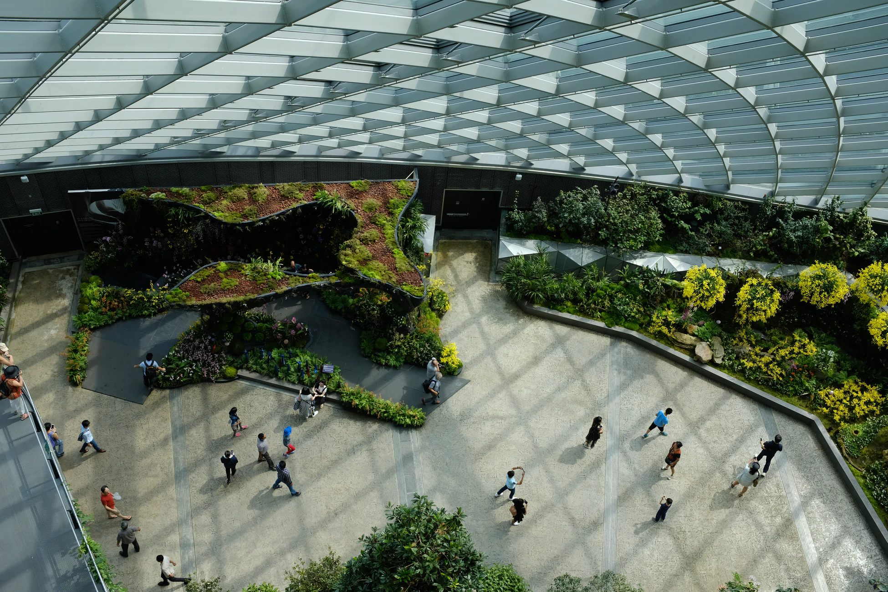
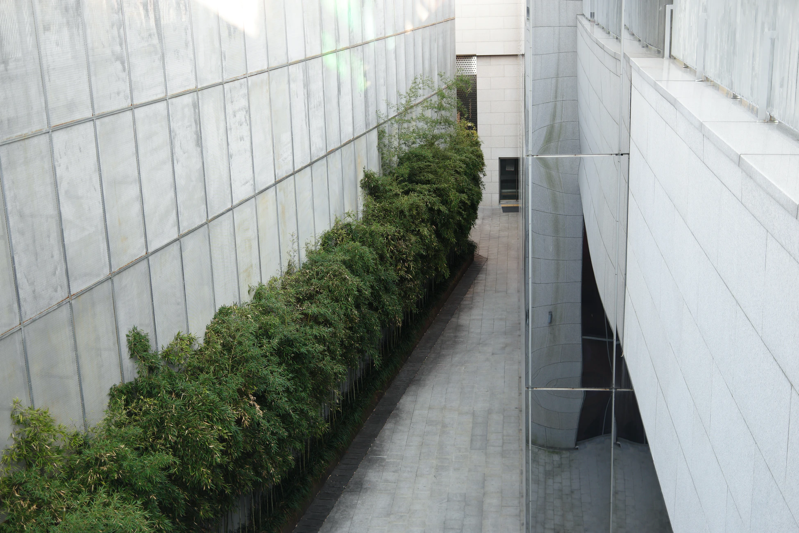
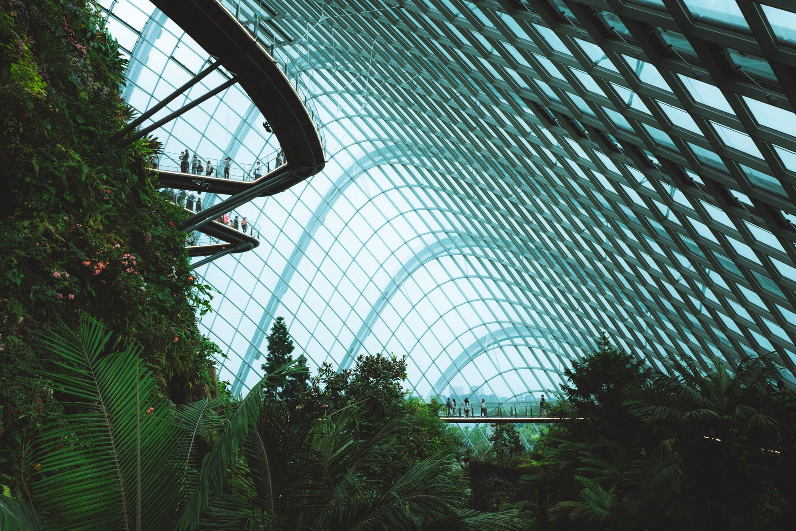

Ландшафтный дизайн от GrowthDept
Ландшафтный дизайн — это вид искусства, который оценивается с точки зрения красоты, целостности произведения и концепции будущего. Последний фактор особенно важен – дизайнерская мысль должна быть настолько перспективной и шагнуть так далеко вперед, чтобы через несколько лет вид вашего участка стал поистине захватывающим.

Как правило, при рождении выдающихся произведений, мысли их создателей витают вокруг одной и той же фразы: «все гениальное – просто», а если говорить о наших финских ландшафтных архитекторах GrowthDept, то для них это выражение уже далеко не витиеватое, а самое что ни наесть коренное и корневое.
 
- Ландшафтный дизайнер, как и любой человек творческой профессии, прежде всего должен иметь художественные наклонности и хороший вкус - посмотрите со вкусом ли он одет, взгляните на внешний вид рабочей одежды.
- Поинтересуйтесь его профессиональными знаниями и практическими навыками, но главное - помните о искусстве сохранения природы, а потому особое внимание обратите на «естественность» его сознания.
- Ландшафтный дизайнер должен иметь большой опыт, владеть приемами высокого ландшафтного искусства, использовать законы композиции и света, а также обладать биологическими познаниями, любовью к природе и всему живому.
- Проектирование ландшафтного дизайна основывается на создании правильных пропорций, которые призваны визуально расширять пространства, придавать им формы и скрывать возможные недочеты.
- Для достижения оптимальной функциональности, гармонии и красоты, с особой тщательностью должны быть продуманы все элементы планировки земельного участка, включая автомобильные и прогулочные дорожки, усадебные строения, декоративные водоемы, ручьи, фонтаны, мостики, спортивные площадки, беседки, цветочные аллеи и т.п.
- Ландшафтный дизайн сегодня – это целый комплекс мероприятий по благоустройству, озеленению и декорированию местности с использованием как природных материалов, так и современных технических разработок. Как проводить те или иные ландшафтные работы, необходим ли дренаж, нужна ли топографическая съемка, проба почвы, вывоз или, наоборот, приобретение земли и т.д.
Эти и многие другие вопросы не имеют однозначного ответа, поскольку любой участок уникален и в каждом случае возможно несколько вариантов - здесь помогут только профессионалы, чьи знания и опыт в области ландшафтного дизайна обеспечат самые оптимальные решения.
Без фанатизма
Главная задача ландшафтного финского архитектора GrowthDept – не быть фанатом какой-то идеи, не навязывать ничего лишнего и не идти вразрез с природой, нарушая ее хрупкий баланс, а уметь создавать красоту, гармонично играя с ее окружением.
Непостижимый финский феномен
Первостепенное значение в Финляндии уделяется стилю жизни, эволюции вкуса и декоративности дизайна в модели живописного вплетения природы в жизнь человека. Заблудшие в лес и комфортабельно раскинувшиеся в нем города – это непостижимый финский феномен. Максимум природы, художественная красота и целостная гармония – сделали Хельсинки не только мировой столицей дизайна, но и самой экологически чистой столицей мира.
Природа для финнов – роскошь для души и самый лучший дизайнер во все времена. Искусство видения природы финскими мастерами архитектуры и их концепции в организации пространства под открытым небом настолько универсальны, что Финляндия стала эталоном высокого ландшафтного искусства и занимает самую высокую позицию в мире.